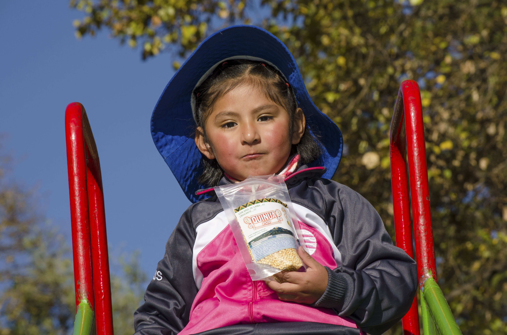

Nosotros
Andean Natural Foods, nace en 2019, en Cochabamba, gracias a la RED de integración de
asociaciones de
agricultores campesinos y la experiencia técnica en beneficiado inocuo de alimentos y
comercialización por
canales modernos, y también decirlo, gracias a Clientes responsables que nos exigen calidad
orgánica.
Nuestro foco es el proveer alimentos inocuos, sin gluten, de origen andino y amazónico, en
sociedad con grupos
u organizaciones campesinas que comparten la visión de una producción orgánica, y con la
actividad generan
desarrollo rural. En los clientes, una grata experiencia culinaria, y excelente nutrición.
Los productos, quinua real, cañahua, amaranto, miel, harinas sin gluten y derivados son
valorados por su
contenido nutricional balanceado y sabor. La FAO, la NASA, y otras instituciones han
reconocido
a estos granos
entre los SUPER ALIMENTOS. No contienen OGM, sin Alergénicos, no usamos pesticidas, y son de
origen
controlado.
Nuestras industrias de beneficiado, cuentan con registro sanitario SENASAG, y otras
certificaciones de calidad.
Algunos de nuestros clientes son: CORONILLA S.A., Andean Valley S.A., Golden Seeds, Integra
Foods, Fractal,
HOY HAY, Kampesino, Arbolaria San Nicolas.
Andean Natural Foods es una pyme, que promueve el desarrollo sostenible en sus grupos de
proveedores de
alimentos, mediante la planificación y puesta en marcha de sistemas de producción orgánica,
y/o
agro ecológica
en campo, logrando la certificación para las normas boliviana, NOP USDA, CE 834/2007 y
889/2008.
Andean
Natural Foods
Es una empresa situada en el corazón de Bolivia, la sede se encuentra ubicada en la ciudad de Cochabamba, la principal producción se gesta en la meseta de Los Andes y selva Amazónica, es un empresa con propósito, conformada por un equipo diverso de profesionales y productores del área rural, ofrece productos ecológicos, orgánicos con alto valor nutricional al mercado local y al resto del mundo, buscando beneficio mutuo, respeto a las comunidades locales y el entorno natural.
Actualmente cuenta con amplia experiencia en beneficiado de alimentos, producción ecológica, generación y promoción de empleo, así como de economía en familias productoras del área rural, buscando un crecimiento orgánico, natural, con el mínimo proceso en los productos, respetando las normas nacionales e internacionales de inocuidad y manteniendo relaciones éticas con los productores.
Misión
Somos una empresa agroproductiva Boliviana que ofrece superalimentos con alto valor nutricional, saludables y orgánicos, a clientes de Bolivia y el mundo, producidos según normas ecológicas, de inocuidad, producción, beneficiado y comercio contando con profesionales y productores con amplia experiencia, empleamos practicas éticas en la relación con los proveedores y clientes además estamos comprometidos con la promoción de desarrollo socio-económico del área rural andina y amazónica a través de la contribución de empleo y generación de economía.

Visión
Ser una empresa líder en la producción, comercialización y exportación de superalimentos tanto en el mercado nacional e internacional, generando valor en la cadena productiva y contribuyendo con mejores condiciones socio económicas de todos los productores del área rural amazónica y andina.
